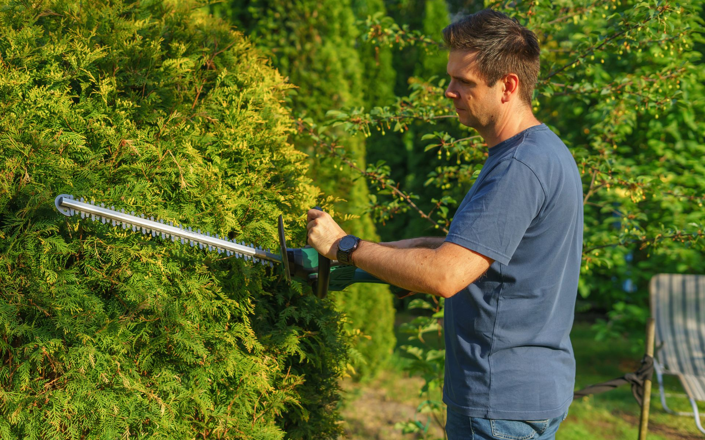
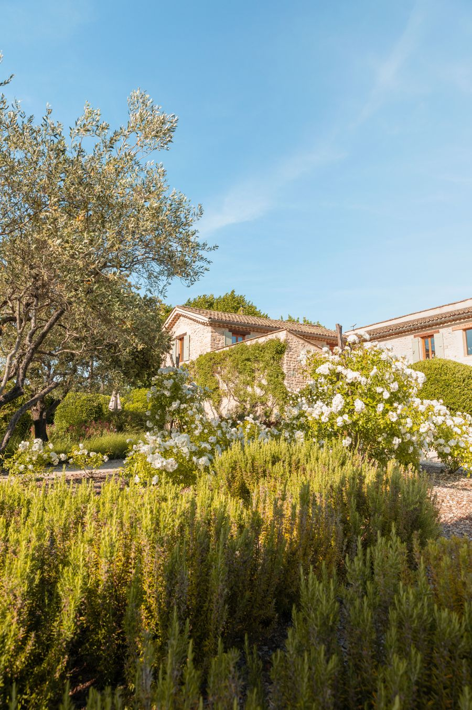
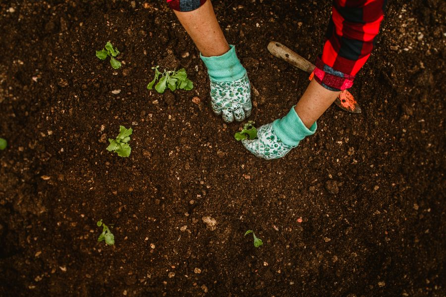

De la conception à l'entretien régulier, Verdura Paysage imagine et prend soin de jardins sur mesure, adaptés à votre terrain et à votre rythme de vie.
Chaque style est une base de travail — nous l'adaptons toujours à votre terrain, votre exposition et votre budget.

Oliviers, lavandes et graminées argentées, sur un sol drainant en gravier clair. Un jardin sobre, résistant à la sécheresse, qui demande peu d'arrosage une fois installé.
Cliquez sur une prestation pour voir à quelle période de l'année elle intervient.
Survolez ou cliquez une prestation pour la mettre en évidence dans le calendrier.
Plan personnalisé selon votre terrain, votre budget et vos envies.
Tonte, désherbage et taille, sur passage hebdomadaire ou mensuel.
Haies, arbustes et arbres, taillés selon leur période idéale.
Installation et réglage de systèmes d'arrosage économes en eau.
Carrés potagers, bordures et rotation des cultures sur mesure.
Terrasses, allées et clôtures végétales pour compléter votre jardin.

Toute l'équipe de Verdura Paysage est formée aux techniques d'entretien raisonné : moins d'arrosage, moins de traitements, plus d'observation. Chaque jardin est pensé pour s'épanouir avec un minimum d'intervention.
Nous travaillons avec des pépinières locales et privilégions les essences adaptées au climat luxembourgeois.
Le jardin méditerranéen qu'ils ont conçu demande à peine d'entretien l'été. Exactement ce qu'on voulait après des années à trop arroser.
Le calendrier d'entretien qu'ils m'ont laissé après l'installation du potager est super pratique — je sais exactement quand semer.
Un premier échange sur place, gratuit et sans engagement, pour comprendre votre terrain et vos envies.